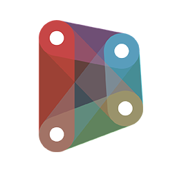

Dynamo
4.1.0
Faster geometry on large graphs, connector pins that survive a save, and a thumbnail on every template.
Dynamo Dispatch · Issue 01
April 2026 · github.com/DynamoDS/Dynamo
01
Canvas
Delete a Watch Node and Keep Your Wires
Features
An inline Watch node sits in the middle of a wire so you can check the data that passes through it. Until now, deleting one also removed the wires on both sides. In 4.1.0, Dynamo reconnects the upstream and downstream ports for you, so the graph keeps working.
0
Connections Lost When You Delete an Inline Watch Node
Canvas · Watch

#16884 — Deleting an inline Watch node reconnects the wires on both sides
What This Means for You
Use inline Watch nodes freely while you debug, then delete them when you finish. The change is PR #16884.
02
Navigation
Jump Across a Graph With Home and End
Features
Press Home to jump to the leftmost node on the canvas, or End to jump to the rightmost node. On a large graph, you do not have to pan to find where the graph starts or ends.
2
New Keyboard Shortcuts: Home and End
Canvas · Keyboard

#16873 — Home and End move the view to the ends of a graph
What This Means for You
Add the two shortcuts to your team's Dynamo quick reference. The change is PR #16873. The same keys now also work correctly in the Package Manager publish form (PR #16886).
03
Extensions
Extensions Get a Place in the Top Menu Bar
Features
The Extensions menu now appears beside the other menus at the top of the home screen. The Extensions panel is also easier to reopen. When it is minimized, starting an extension or clicking the Sidebar button expands it to its default width.
Top
Where the Extensions Menu Now Sits, Beside the Other Menus
UI · Extensions

#16771 — The Extensions menu beside the other top-level menus
What This Means for You
If you build view extensions, check how yours looks when the panel expands to its default width (PR #16897 and PR #16858). The menu change is PR #16771.
04
Documentation Browser
The Documentation Browser Can Follow Your Selection
Features
The Documentation Browser shows help for nodes. With the new AutoSync setting turned on, it follows the node you select, so the help you see matches the node you are working on.
AutoSync
New Setting That Follows the Selected Node
Documentation Browser · Preferences

#16887 — The AutoSync setting for the Documentation Browser
What This Means for You
Turn AutoSync on when you learn a new package or review a graph from someone else. The change is PR #16887.
05
Package Manager
An Autodesk Badge Marks Packages From the Dynamo Team
Features
Package Manager now shows an Autodesk badge next to packages maintained by the Dynamo team. You can see which packages come from the team while you browse.
1
New Badge for Dynamo Team Packages
Package Manager

#16830 — The Autodesk badge next to Dynamo team packages
What This Means for You
If you approve packages for your office, the badge is a quick first check of where a package comes from. The change is PR #16830.
06
Templates
Templates Now Show What Is Inside
Templates
Templates are starter graphs that you open from the start page. In 4.1.0, each template shows a thumbnail preview image, so you can see what it contains before you open it. Graphs and templates without a custom thumbnail get a placeholder icon.
Template names now use readable titles instead of internal identifiers.
Every
Template Shows a Thumbnail or a Placeholder Icon
Home Screen · Templates

#16981 — Template cards with thumbnail previews on the start page
What This Means for You
The File > Open > Template dialog now accepts template files only, not DYF custom node files (PR #16954). The thumbnails are PR #16981.
07
Connector Pins
Pins and Pinned Notes Stay Where You Put Them
Bug Fixes
A connector pin is a point you add to a wire to control its route. 4.1.0 fixes four ways that pins went wrong. They moved upward after you saved and reopened a graph. They disappeared after Save As. They were left out of copy and paste. They were dropped when you dragged a wire to reconnect it.
Pinned notes, the notes you attach to a node, get four fixes of their own, including undo with Ctrl+Z.
8
Fixes for Connector Pins and Pinned Notes
Connectors · Notes · Undo

#16950 — Connector pins in place after a graph is saved and reopened
What This Means for You
If you rebuilt pins after Save As or after reopening a graph, you can stop. Those fixes are PR #16945 and PR #16950.
08
Geometry
Two New Nodes for Periodic NURBS Curves
Geometry & LibG Updates
Two new nodes, NurbsCurve.PeriodicKnots and NurbsCurve.PeriodicControlPoints, give you the knots and control points of periodic NURBS curves. Both nodes have icons and documentation.
Other curve nodes changed too. PolyCurve.ByPoints and Polygon.ByPoints now behave the same way. Curve.PullOntoPlane and Curve.PullOntoSurface return concrete curve types and run faster.
2
New Nodes for Periodic NURBS Curves
LibG · NURBS

#16931 — NurbsCurve.PeriodicKnots and NurbsCurve.PeriodicControlPoints
What This Means for You
If your C# nodes check the type returned by Curve.PullOntoPlane or Curve.PullOntoSurface, test them again (PR #16908). The new nodes are PR #16896.
09
Package Manager
See Your Installed Version While You Search
Package Manager
In Package Manager, the Search tab now shows which version of a package you have installed. You can compare it with the latest version without leaving your search results.
Package authors get help as well. A new button copies the compatibility information from a previous version when you publish, so you do not have to enter it again.
0
Tab Switches to Check Your Installed Version
Package Manager · Publishing

#16853 — The installed version shown in Package Manager search results
What This Means for You
If you publish packages, try the copy button the next time you release, and check the copied values first (PR #16831). The version display is PR #16853.
10
Also in This Release
Also in 4.1.0: Faster Geometry and Fewer Crashes
Performance Improvements · Bug Fixes
Dynamo was severely slow when it handled large numbers of geometry objects. Different objects could receive the same hash code, the number used to find an object quickly. 4.1.0 gives each object a hash code based on its identity, which removes the problem.
Several crashes are fixed, including two while you pan and zoom and two with Node AutoComplete. In the 3D preview, the gizmo now redraws during a drag and the camera no longer drifts when you zoom in close. Python nodes no longer use purple syntax highlighting.
28
Entries in the 4.1.0 Bug Fix List
Performance · Stability · Developers
What This Means for You
PR #16754 is the main reason to upgrade if your graphs handle many geometry objects. For developers: NodeCategoryAttribute is now type-forwarded to DynamoServices (PR #16914), and the graph file format has a JSON Schema (PR #16919).
Editorial Verdict · Dynamo 4.1.0
A Faster, Steadier Dynamo for Large Graphs
Dynamo 4.1.0 fixes a severe slowdown with large numbers of geometry objects, repairs connector pins and pinned notes, and adds thumbnails to templates. Teams with geometry-heavy graphs and package authors benefit most. The release notes flag no breaking changes, but test any nodes that depend on curve return types before you roll it out.
Upgrade — Performance and Stability Fixes Justify It